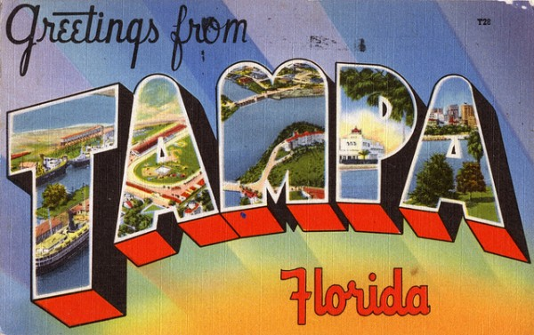

-
A Plea for America’s Next Greatest City
by A.E. Zimmer September 7, 2012
courtesy of Steven R Shook.
Imagine being from a place considered so laudably “cultureless” that even Jon Stewart’s grasping for straws to describe it. In a recent Daily Show skit, pundits were asked what they knew about the two convention host cities. When asked about Tampa, the first response comes from comedian Samantha Bee. After some concentration she finds her answer, “It’s horrible!” she shouts, to big laughs.
I begin with such an anecdote because these kinds of reactions have become commonplace for me, of this year specifically, as my hometown of Tampa, Florida has become a bi-syllabic curse word to thousands. Infamous now as the home for 2012′s Republican National Convention, it’s the battle ground for “The War on Women,” as well as plenty other catchphrases that make my sense of home quiver and flinch at every incoming headline.
Yet, despite the sourness, many anticipate — Tampanians included — that the RNC will prop up our town as a place that finally holds cultural worth — the kind that can be recognized on a national front. We, the city of Tampa, wear many hats, hats of multitudinous style and connotation. The aliases run far and wide: The Big Guava, Cigar City, Lightning (and Strip-Club) Capital of the World, Cigar Capital of the World, and — most precariously –America’s Next Greatest City.
Last week marked the beginning of a full-court press in Tampa’s petition to become that Next Great City. Our being tapped for the RNC has been a tense and exciting confirmation, proof that we’re finally “good for it.” And with the recent stats circulating, (an average household income estimated at 41K, for starters) much design has gone into articulating Tampa as a Safeway for a distinctly “RNC-approved demographic.” If I were to speculate that statistic’s makeup, it might resemble the populace of Downtown Tampa, the backdrop for the convention and the city’s financial center. Home to some of the most wealthy individuals around, it is also one of the most gentrified zip codes in the country, with Downtown’s slickly glitz Channelside holding an over 66% Caucasian residence.
But as I watch my fair city descend the stairs, polished to look as lovely as any Floridian flower, I realize Tampa’s route to become America’s Next Greatest City forges ahead in a time of our nation’s great decline. Plus, the attempt — like any to acquire national prominence — sidesteps the massive pools of people that make us… us. The small percentage of Tampa being lifted up to the world is an outrageous skew of the city. Yet, for anyone from the place itself this sort of cringing irony kind of comes with being a Tampanian — it comes with inhabiting a bayside paradise that is wan and humid and sometimes less-than-bearable.
We’re an experiment of a city. In fact, sprawls of Tampa are leftover experiments in industry, much of the landscape a hotbed of corporate control groups and mission statements. Off-color restaurant chains (heard of the Tilted Kilt?) that hold their own, strange enclaves of patrons, while car dealerships of many disparate brands (one of the first Smart Car dealerships cropped up in Tampa) sit stagnate along the stretch of Dale Mabry Highway, one of the city’s longest roads.
Then there’s the whole strip club thing. It’s quasi-true — the intersections with strip clubs dotting the corners of roads like gas stations. We’ve been labeled a “strip club capital,” and Channing Tatum, of “Magic Mike” success, has based his success on his time in Tampa and Clearwater venues. But we’ve also got The Skatepark of Tampa, a legendary park in the history of skateboarding, a brilliant Museum of Science and Industry, and Straz’s Performing Arts Center, where I saw my first Opera. But since these landmarks don’t serve the political climate, they’ve been overlooked, if not made outright illegal.
As preparations for the RNC began, a number of those strip clubs have been involved in sting operations, and over sixteen women, who’d otherwise be enjoying the constancy of their jobs, were arrested. But the demand for unsavory services in Tampa remain as high as ever. A large number of Craigslist posts for escort services have surfaced, both in search of and in supply of men and women for hire within the downtown area. Other impurities have been similarly scrubbed. Occupy Tampa, though slowly losing steam over the summer months, has all but been disbanded with the onset of the RNC. Most protests of this and other issues surrounding the RNC by Tampa citizens have been ostensibly squelched in media.
Surveillance of my fair city has been severe in almost every aspect. According to an article in the Tampa Bay Times: “the city has now five surveillance cameras watching traffic downtown…hundreds more on the street and in the sky”. I couldn’t be in Tampa for the whole she-bang, so I asked a friend what it’s been like. His answer? “Rain and lots of cops.”
Which is not something we’re totally used to seeing. Crime and its policing has been a serious, though declining, problem within the Tampa Bay Area. Since 1999, our crime averages have creeped below the national and state averages. There’s an exorbitant number of homeless. Tampa holds over 16,000 citizens without homes — the nation’s highest homelessness rate — the same people expected to be earning an average 41K per household. Indeed — of the homeless in Tampa, about 88 percent were already residents of Hillsborough Country before becoming so. Unemployment is at 8 percent, underemployment a higher 16.8%. Portions of Tampa’s neighborhoods have outsized percentages of families living below the poverty line, some close to 30 percent.
And believe me, mum’s the word on the subject of Gasparilla, Tampa’s very own Wintertime Mardi Gras. The event — hosted on the causeways of Downtown Tampa itself — is a dazzlingly florid, areola-flashing affair, organized in the name of one of Tampa’s most infamous historical battle, taken over by pirates in the 1800′s. But this spritely history is all a bit of fabrication. Jose Gaspar‘s only fun legend, and what’s worse, there was never a seabattle for Tampa ‘twixt spurious pirates and city. No one, it seems, has ever really felt the need to fight that hard for Tampa, at least not historically.
The particulars of our history, you could say, have always been a bit tenuous. But, even with such glaring disparity, we’d like, if you’d let us, to get this one thing right. To house roves of people with a grace and aplomb that has never before been associated with us. Nor ever really been allowed us.
And we needed this to go well. But like any city that has been chosen to represent personhood — Olympic London included — the cleanliness of the event does much to sweep the rest of the public under a half-clean rug. It’s one thing to hold our breath for conservative value, but another to do so at the expense of all we’ve done before. In our minds, we’ve always been the template of an average American paradise. Our blemishes and follies mirror those of the nation. Like our country, we’ve tried out every business and enterprise. Things that succeed here succeed with a humbleness and constancy, sure in their routine and surer in their keeping a low profile. What fails here fails loudly, and the abandoned industry that scrolls out beyond Downtown Tampa is left for those less wealthy to care for. In this way we demarcate that very snap that has in recent years, plagued American living — the “have and have-nots” debate that has been swirling now for too long.
This is not meant to air my hometown’s laundry. It is simply one voice from there, with a plea asking that for those in opposition of what Tampa might represent, know that somehow, we are like you. We Tampanians are very much just like you. We’ve giggled at the ludicrous sound of our name, too, plus we’ve probably been the guinea pigs for suburban American trends before they got to you in the first place. Maybe we’re you before you realized who you really were — in the collective sense of course.
The way we see it, we’re a kind of temperate template: a blueprint for what an average American can trust in when they imagine a quiet, humble utopia. Whether that idea has succeeded or failed, we have tasted that side of paradise. We desperately want this to go well — the smiling white caps, the baby kissing, dodging the torrents of that biblical Isaac. Whatever shore the storm strikes, our hope and our optimism will sustain until all of this is well over with, the shiny backdrops have been rolled up. Our dreams for ourselves, persist, in a tradition lots of Americans might understand. We are every bit alive with cultural worth, and it’s my hope that we can rep our grittiness as well as a Patterson, New Jersey or a Detroit Rock City. Until then, we’re an aspirational place — a place you should more than visit. Because our hopes for you are hopes for us, and they stretch over Tampa North and South, eventually pour out to merge with that great, glittering Bay.